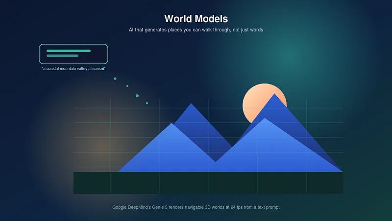

World Models: The Quiet Race to Build AI That Understands Reality, Not Just Language


While most of the public conversation about generative AI has been about chatbots and image generators, a different race has been building quietly in research labs — one aimed at something more ambitious than answering questions or making pictures. The goal: AI that can generate an entire explorable environment, understand how it behaves, and predict what happens next inside it.
These are called world models, and 2025 into 2026 turned out to be the moment they left the research lab and became something people could actually try.
What Makes a World Model Different
A language model like ChatGPT or Claude is, underneath, a next-word predictor. Feed it a sequence of text, and it predicts what’s most likely to come next. That simple mechanism, scaled up, turned out to be enough to produce something that can reason, write, and code.
A world model applies the same basic idea to a completely different kind of data: instead of predicting the next word, it predicts the next frame. Trained on video and interactive footage rather than text, it learns not what words mean, but how a physical scene evolves — what happens when a ball rolls off a table, what a room looks like from a different angle, how a character’s shadow should move as they walk.
The most visible proof of concept came from Google DeepMind’s Genie 3, unveiled in 2025. Genie 3 generates fully navigable 3D environments from a simple text prompt, rendering at 24 frames per second and holding visual consistency for several minutes of real-time exploration — a huge leap from earlier systems that could only produce a few seconds of coherent video. In January 2026, Google opened a version of it to AI Ultra subscribers through a prototype called Project Genie, and later extended it at Google I/O 2026 with a Street View integration that can turn real-world locations into explorable simulations.
An Increasingly Crowded Race

Genie isn’t alone. The period researchers now describe as the start of the “world model race” pulled in a striking number of serious players, fast:
Fei-Fei Li’s World Labs launched Marble, the first commercially available world-model product, with pricing tiers from free up to $95 a month.
NVIDIA’s Cosmos platform, aimed at robotics and autonomous-vehicle developers, has reportedly seen millions of downloads as companies look for physics-aware synthetic training data.
Meta announced WorldGen, research capable of generating walkable 3D worlds from short prompts.
Tencent open-sourced HY World, alongside a 3D content generation studio of its own.
Yann LeCun, after twelve years at Meta, left to start a new company betting that understanding physics — not predicting text — is the more important road toward general AI, raising hundreds of millions of euros to pursue it.
That last move is probably the clearest signal of how seriously the field is taking this direction. One of the most senior researchers in AI walked away from a major lab specifically to chase world models full-time.
Not Just a Research Curiosity
What separates this moment from earlier “AI makes 3D scenes” demos is that world models are already being put to work in industries that can’t tolerate a toy that just looks impressive:
Autonomous vehicles. Waymo has used Genie 3 to build a customized world model for simulating rare, dangerous edge cases — the kind of scenario that’s too risky, or simply too rare, to wait for in the real world before training on it.
Robotics. Companies training robots to move through physical spaces are using world models as a virtually unlimited, low-cost training ground, generating far more practice scenarios than could ever be filmed or staged.
Game design. Studios are experimenting with generating playable environments directly from a text description, compressing what used to be weeks of level design into a prompt.
AI agent training. Instead of letting an agent learn by trial and error in the real world — expensive and occasionally dangerous — a world model offers a sandbox where mistakes are free.
The Bigger Claim Behind the Technology
Researchers pushing world models forward tend to make a claim that goes beyond any single application: that this is a meaningful step toward more general intelligence, not just a new content-generation tool. Genie 3’s own research lead has described it as the first real-time interactive general-purpose world model — explicitly framed as going beyond narrow, task-specific systems.
The reasoning behind that claim is straightforward, even if the engineering isn’t: an AI system that has to predict how a physical scene will unfold has to implicitly learn something about how the physical world actually works — gravity, momentum, cause and effect — in a way that a system trained purely on text never has to. Whether that implicit physical understanding generalizes into something closer to genuine reasoning is one of the most actively contested questions in AI research right now.
What’s Still Unresolved

For all the momentum, world models remain early technology, with real open questions attached:
Consistency over time. Even the best systems today hold a coherent, physically plausible world for a few minutes, not indefinitely — long-horizon stability is an active area of research, not a solved problem.
Compute cost. Generating real-time video frame by frame is far more expensive than generating text, which limits how widely this can scale until costs come down.
Where synthetic and real blur together. As these systems get better at recreating real places — as the Street View integration shows — questions about consent, misuse, and how to label AI-generated environments are going to need real answers, not just good intentions.
None of that is a reason to dismiss the technology — it’s simply where the frontier currently sits. Two years ago, an AI generating a few blurry seconds of a video game screen was a research milestone. Today, that same lineage of research produces places you can walk through in real time. If that trajectory holds, the next few years of generative AI may be defined less by better conversations and more by better worlds.
………………………………………………………………………………………………
Sources: Google DeepMind, “Genie 3: A new frontier for world models,” 2025; Google DeepMind Blog via PYMNTS.com, January 2026; Wikipedia, “Genie (world model)” and “Project Genie (website)”; Introl Blog, “World Models Race 2026,” January 2026. This article reflects publicly available information as of September 2026.
World Models: The Quiet Race to Build AI That Understands Reality, Not Just Language was originally published in Towards Deep Learning on Medium, where people are continuing the conversation by highlighting and responding to this story.
Explore my technical writing services and research samples or learn more about Soumi Ganguly.